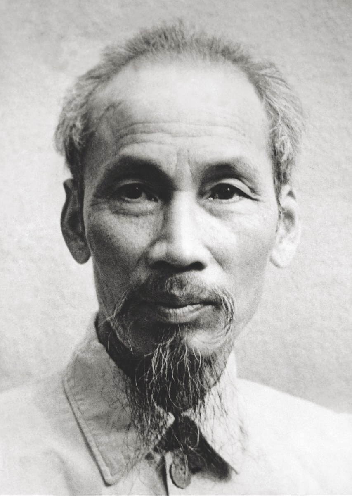

1. Đặt vấn đề: Vì sao phải bàn về "chuẩn mực sống đẹp"?
Trong môi trường đại học hôm nay, nơi tri thức và công nghệ tăng trưởng từng ngày, một câu hỏi luôn khiến nhiều bạn trẻ trăn trở: Làm sao để vừa vững chuyên môn, vừa giữ được một nhân cách đẹp và trách nhiệm với xã hội?
Trước áp lực thi cử, sự bùng nổ của các công cụ trí tuệ nhân tạo (AI) và nhịp sống số hối hả, sinh viên đôi khi dễ rơi vào sự vội vã, ỷ lại và thiếu kiên trì. Học tập và làm theo tư tưởng, đạo đức, phong cách Hồ Chí Minh không phải là điều gì trừu tượng, mà chính là con đường gần gũi, thực tế nhất giúp mỗi bạn trẻ xây dựng "chuẩn mực sống đẹp" từ chính nếp sống và kỷ luật học tập mỗi ngày.

2. Kỷ luật và đúng hẹn: Xương sống của sự tiến bộ
Bác Hồ luôn xem việc đúng giờ là biểu hiện cao nhất của sự tôn trọng: tôn trọng chính mình, tôn trọng người khác và tôn trọng công việc chung. Trong kháng chiến gian lao, có lần Bác đến dự một lớp chỉnh huấn cán bộ. Dù trời đổ mưa lớn, đường rừng lầy lội, Bác vẫn đến lớp đúng giờ đã định, áo mưa ướt sũng, quần xắn quá đầu gối. Khi học viên xúc động ngỏ lời xin lỗi Bác vì thời tiết xấu, Người ôn tồn bảo:
Là sinh viên ngành Công nghệ Thông tin tại Trường Đại học Công nghệ Thông tin (ĐHQG-HCM), bài học ấy nhắc nhở mỗi chúng mình trong từng thói quen: vào giảng đường sớm vài phút, hoàn thành bài tập lớn trước hạn định, giữ cam kết tiến độ khi làm việc nhóm. Trong nghề nghiệp lập trình, kỷ luật còn là danh dự: viết mã nguồn chỉn chu, bảo vệ an toàn thông tin người dùng và nói không với việc sao chép mã nguồn gian lận.

3. Giản dị và tiết kiệm: Ít ồn ào, nhiều hiệu quả
Suốt cuộc đời, Bác luôn giữ nếp sống thanh bạch: chiếc áo kaki sờn vai, đôi dép cao su giản dị, căn nhà sàn gỗ đơn sơ giữa thủ đô. Ở Bác là một quan niệm sống sâu sắc: “Cái đẹp nằm ở sự vừa đủ, không ở sự cầu kỳ, hình thức.”
Đối với sinh viên hôm nay, học Bác từ việc tiết kiệm không chỉ dừng ở việc tắt điện khi rời phòng học hay giữ gìn tài sản chung của nhà trường, mà còn là tiết kiệm thời gian: không để bản thân bị cuốn vào những trào lưu vô bổ trên mạng xã hội, biết quản lý năng lượng để tập trung nghiên cứu khoa học và rèn luyện thể chất.

4. Tinh thần tự học suốt đời của người làm công nghệ
Chủ tịch Hồ Chí Minh là hiện thân tiêu biểu của tinh thần tự học. Bôn ba khắp năm châu với hai bàn tay trắng, Người tự học ngoại ngữ và tri thức thời đại thông qua lao động thực tế, từng viết từ vựng lên cánh tay để vừa làm phụ bếp vừa nhẩm đọc. Người từng căn dặn thế hệ trẻ:
Đặc thù ngành Công nghệ Thông tin là sự thay đổi diễn ra từng ngày từng giờ. Những công nghệ mới, ngôn ngữ lập trình mới liên tục xuất hiện. Tinh thần tự học của Bác chính là động lực lớn nhất để sinh viên UIT chủ động nghiên cứu tài liệu gốc quốc tế, đào sâu tư duy nền tảng, không phụ thuộc thụ động vào các công cụ AI tạo sinh, và luôn sẵn sàng làm chủ tri thức mới.
5. Phụng sự cộng đồng: "Học để làm việc, giúp dân, giúp nước"
Trong một lần Bác đến thăm lớp học Bình dân học vụ sau ngày độc lập, khi một học viên trả lời "Thưa Bác, học để biết chữ ạ", Bác đã mỉm cười và căn dặn:
Lời dạy ấy nhắc nhở chúng mình rằng việc học không dừng lại ở điểm số trên bảng điểm hay một mức thu nhập cá nhân. Tri thức công nghệ chỉ thực sự tỏa sáng khi nó mang lại giá trị cho cộng đồng: một ứng dụng giúp đỡ người yếu thế, một hệ thống số hóa hỗ trợ thủ tục cho người dân vùng xa, hay đơn giản là dành thời gian hỗ trợ một người bạn cùng lớp cùng tiến bộ.

6. Ý tưởng mô hình: "3 Tự — 3 Tiên phong" cho sinh viên UIT
Từ những bài học quý báu của Bác và đặc thù học tập tại Trường Đại học Công nghệ Thông tin (ĐHQG-HCM), mình xin đúc kết khung rèn luyện mang tên "Mô hình 3 Tự — 3 Tiên phong" như một định hướng hành động thiết thực cho sinh viên:
Trụ cột I: "3 Tự" (Rèn mình)
- Tự học suốt đời: Chủ động đọc tài liệu chuyên sâu, làm chủ công nghệ lõi, không ngừng nâng cao tay nghề lập trình.
- Tự rèn kỷ luật: Đi học đúng giờ, nộp đồ án đúng hẹn, trung thực trong thi cử và nghiên cứu khoa học.
- Tự soi và tự sửa: Thường xuyên nhìn nhận khuyết điểm của bản thân mỗi tuần để hoàn thiện đạo đức và tác phong làm việc.
Trụ cột II: "3 Tiên phong" (Phụng sự)
- Tiên phong số: Đem kiến thức công nghệ hỗ trợ cộng đồng, tình nguyện phổ cập kỹ năng số cho người dân.
- Tiên phong sáng tạo: Tham gia phát triển các sản phẩm phần mềm mã nguồn mở giải quyết các bài toán xã hội.
- Tiên phong văn hóa mạng: Giữ chuẩn mực ứng xử văn minh trên Internet, lan tỏa lối sống đẹp và tinh thần tương thân tương ái.
7. Lời kết
Học tập theo Bác không phải là những điều to tát vượt quá tầm với. Mỗi sinh viên chúng mình đều có thể bắt đầu ngay hôm nay: từ việc vào giảng đường đúng giờ, một lời hứa giữ trọn, một tinh thần tự học kiên trì và một mong muốn dùng công nghệ để phụng sự Tổ quốc.